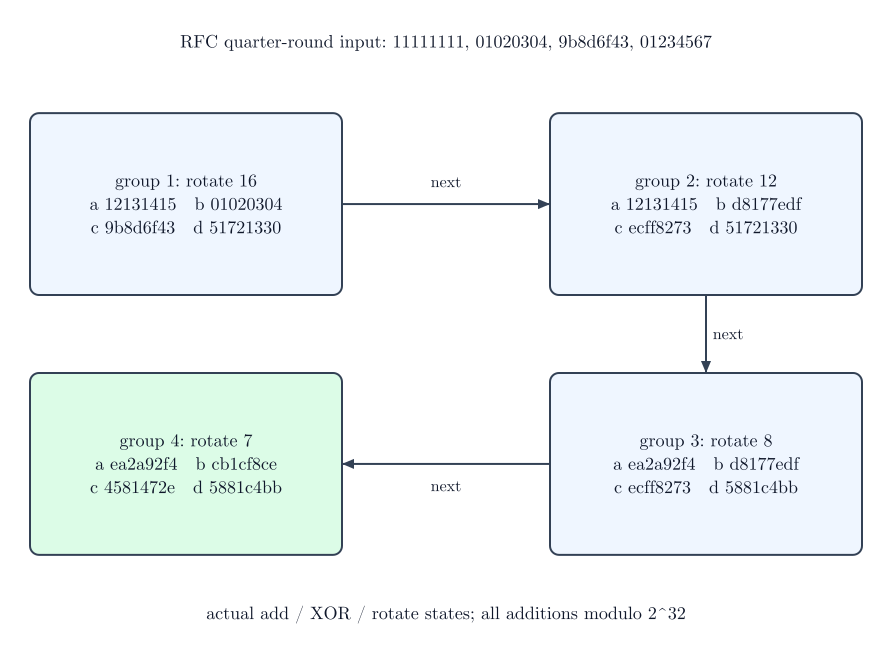
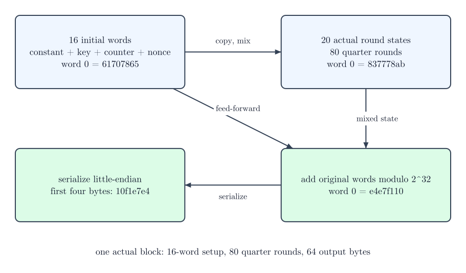
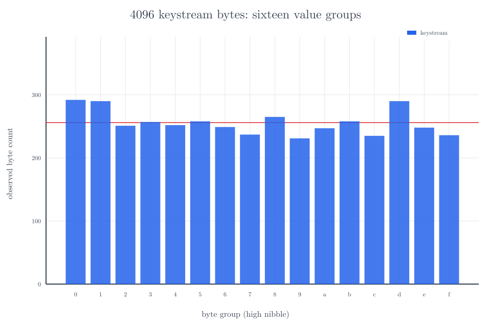

ChaCha20: Actual ARX Stages, RFC Vectors and Counter Limits
Abstract
A stream cipher expands a key, nonce and counter into bytes that can be XORed with a message without changing its length. Correct byte order, round scheduling and counter limits matter even when encryption and decryption appear to round-trip. We inspect a four-word quarter round, reproduce the complete RFC 8439 block and ciphertext vectors, and retain the original 4 KiB histogram. Native C++ now records actual ARX stages, block states and XOR block use, rejects complete-call counter wrap, and supplies binary hex and histogram helpers. A constant-byte control shows why the histogram's mean does not establish uniformity. Raw XOR also does not authenticate a message. These are executed conformance and mechanism checks, not a security proof or a machine-code timing audit.
A four-word quarter round, small enough to inspect
Use the public RFC input a=11111111, b=01020304, c=9b8d6f43, d=01234567 in hexadecimal. Each addition is modulo 2^32. The first addition gives a=12131415; XOR and rotation give d=51721330. The next group updates c and b. Two more groups produce the published output ea2a92f4, cb1cf8ce, 4581472e, 5881c4bb. The table and figure use intermediate values from the actual shared quarter-round kernel.
#include <dm/dm.hpp>
int main() {
std::filesystem::create_directories("build");
const auto trace=dm::algorithms::chacha20_quarter_trace({0x11111111,0x01020304,0x9b8d6f43,0x01234567});
const std::array<std::uint32_t,4> expected{0xea2a92f4,0xcb1cf8ce,0x4581472e,0x5881c4bb};
if(trace.output!=expected) return 1;
const std::array<int,4> rotations{16,12,8,7};
std::print("| compound group | rotation | a | b | c | d |\n| ---: | ---: | :--- | :--- | :--- | :--- |\n");
dm::graphics::Diagram diagram(65,1050);
dm::graphics::DiagramNodeStyle node;node.width=4.8;node.height=2.8;node.font_size=18;
const std::array<dm::graphics::DiagramPoint,4> positions{{{0,0},{8,0},{8,-4},{0,-4}}};
for(std::size_t i=0;i<4;++i) {
const auto& state=trace.stages[i];
std::print("| {} | {} | {:08x} | {:08x} | {:08x} | {:08x} |\n",i+1,rotations[i],state[0],state[1],state[2],state[3]);
if(i==3) node.fill={220,252,231};
diagram.node(std::format("group{}",i),positions[i],
std::format("group {}: rotate {}\na {:08x} b {:08x}\nc {:08x} d {:08x}",i+1,rotations[i],state[0],state[1],state[2],state[3]),node);
if(i) diagram.edge(std::format("group{}",i-1),std::format("group{}",i),"next");
}
diagram.text({4,2.5},"RFC quarter-round input: 11111111, 01020304, 9b8d6f43, 01234567",18)
.text({4,-6.3},"actual add / XOR / rotate states; all additions modulo 2^32",18)
.save_svg("build/chacha20_quarter.svg");
}| compound group | rotation | a | b | c | d |
|---|---|---|---|---|---|
| 1 | 16 | 12131415 | 01020304 | 9b8d6f43 | 51721330 |
| 2 | 12 | 12131415 | d8177edf | ecff8273 | 51721330 |
| 3 | 8 | ea2a92f4 | d8177edf | ecff8273 | 5881c4bb |
| 4 | 7 | ea2a92f4 | cb1cf8ce | 4581472e | 5881c4bb |

The groups are a+=b, d=ROTL(d XOR a,16); c+=d, b=ROTL(b XOR c,12); then the same pattern with rotations 8 and 7. A rotation, XOR with a known word, and modular addition each have inverses. Reversing the group order therefore recovers the quarter-round input; native tests check that on 10,000 inputs. Encryption does not invert this permutation: it generates the same keystream and cancels XOR instead.
Columns, diagonals, feed-forward and little-endian bytes
The RFC block has sixteen 32-bit words: four constants, eight key words, one counter and three nonce words. One round applies four column quarter rounds; the next uses diagonals. Ten such pairs give 20 rounds and 80 quarter rounds. Adding the original words modulo 2^32 and serializing each word least-significant byte first gives 64 keystream bytes. Feed-forward is part of the specified construction; its presence alone is not a proof of one-wayness or secrecy.
This program checks all 64 bytes of RFC 8439 Section 2.3.2, rather than only the old report's first 32. Its state table comes from actual setup, permutation and feed-forward records. The first diagonal selects indices [0,5,10,15], whereas the first column selects [0,4,8,12].
#include <dm/dm.hpp>
int main() {
std::filesystem::create_directories("build");
std::array<std::uint8_t,32> key{};std::iota(key.begin(),key.end(),std::uint8_t{0});
const std::array<std::uint8_t,12> nonce{0,0,0,9,0,0,0,0x4a,0,0,0,0};
const auto trace=dm::algorithms::chacha20_block_trace(key,1,nonce);
const auto hex=dm::algorithms::to_hex(trace.output);
const std::string expected="10f1e7e4d13b5915500fdd1fa32071c4c7d1f4c733c068030422aa9ac3d46c4e"
"d2826446079faa0914c2d705d98b02a2b5129cd1de164eb9cbd083e8a2503c4e";
if(hex!=expected || trace.quarter_rounds.size()!=80) return 1;
std::print("| word index | initial | after 20 rounds | after feed-forward |\n| ---: | :--- | :--- | :--- |\n");
for(std::size_t i=0;i<16;++i) std::print("| {} | {:08x} | {:08x} | {:08x} |\n",i,trace.initial[i],trace.round_states[19][i],trace.feed_forward[i]);
std::print("\nFirst column indices: {}. First diagonal indices: {}.\n",trace.quarter_rounds[0].indices,trace.quarter_rounds[4].indices);
std::print("Complete RFC block matches: {}.\n",hex==expected);
for(std::size_t offset=0;offset<64;offset+=16) std::print("Bytes {:02}..{:02}: {}\n",offset,offset+15,hex.substr(2*offset,32));
dm::graphics::Diagram diagram(65,1100);
dm::graphics::DiagramNodeStyle node;node.width=5.1;node.height=2.2;
diagram.node("initial",{0,0},std::format("16 initial words\nconstant + key + counter + nonce\nword 0 = {:08x}",trace.initial[0]),node);
diagram.node("mixed",{8,0},std::format("20 actual round states\n{} quarter rounds\nword 0 = {:08x}",trace.quarter_rounds.size(),trace.round_states[19][0]),node);
node.fill={220,252,231};
diagram.node("sum",{8,-4},std::format("add original words modulo 2^32\nword 0 = {:08x}",trace.feed_forward[0]),node)
.node("bytes",{0,-4},std::format("serialize little-endian\nfirst four bytes: {}",hex.substr(0,8)),node)
.edge("initial","mixed","copy, mix").edge("mixed","sum","mixed state")
.edge("initial","sum","feed-forward").edge("sum","bytes","serialize")
.text({4,-6},"one actual block: 16-word setup, 80 quarter rounds, 64 output bytes",18)
.save_svg("build/chacha20_block.svg");
}| word index | initial | after 20 rounds | after feed-forward |
|---|---|---|---|
| 0 | 61707865 | 837778ab | e4e7f110 |
| 1 | 3320646e | e238d763 | 15593bd1 |
| 2 | 79622d32 | a67ae21e | 1fdd0f50 |
| 3 | 6b206574 | 5950bb2f | c47120a3 |
| 4 | 03020100 | c4f2d0c7 | c7f4d1c7 |
| 5 | 07060504 | fc62bb2f | 0368c033 |
| 6 | 0b0a0908 | 8fa018fc | 9aaa2204 |
| 7 | 0f0e0d0c | 3f5ec7b7 | 4e6cd4c3 |
| 8 | 13121110 | 335271c2 | 466482d2 |
| 9 | 17161514 | f29489f3 | 09aa9f07 |
| 10 | 1b1a1918 | eabda8fc | 05d7c214 |
| 11 | 1f1e1d1c | 82e46ebd | a2028bd9 |
| 12 | 00000001 | d19c12b4 | d19c12b5 |
| 13 | 09000000 | b04e16de | b94e16de |
| 14 | 4a000000 | 9e83d0cb | e883d0cb |
| 15 | 00000000 | 4e3c50a2 | 4e3c50a2 |
First column indices: [0, 4, 8, 12]. First diagonal indices: [0, 5, 10, 15]. Complete RFC block matches: true. Bytes 00..15: 10f1e7e4d13b5915500fdd1fa32071c4 Bytes 16..31: c7d1f4c733c068030422aa9ac3d46c4e Bytes 32..47: d2826446079faa0914c2d705d98b02a2 Bytes 48..63: b5129cd1de164eb9cbd083e8a2503c4e

The complete ciphertext vector and actual block use
For RFC 8439 Section 2.4.2 the nonce differs from the preceding block test: its first four bytes are zero. The same key bytes 00 through 1f and counter one encrypt the original 114-byte sunscreen message. We compare the full ciphertext, not just its first sixteen bytes. The second block uses fifty bytes and discards fourteen unused bytes in this one-shot API.
#include <dm/dm.hpp>
int main() {
std::array<std::uint8_t,32> key{};std::iota(key.begin(),key.end(),std::uint8_t{0});
const std::array<std::uint8_t,12> nonce{0,0,0,0,0,0,0,0x4a,0,0,0,0};
const std::string plain="Ladies and Gentlemen of the class of '99: If I could offer you only "
"one tip for the future, sunscreen would be it.";
const auto trace=dm::algorithms::chacha20_encrypt_trace(key,1,nonce,plain);
const auto hex=dm::algorithms::to_hex(std::string_view(trace.output));
const std::string expected="6e2e359a2568f98041ba0728dd0d6981e97e7aec1d4360c20a27afccfd9fae0b"
"f91b65c5524733ab8f593dabcd62b3571639d624e65152ab8f530c359f0861d8"
"07ca0dbf500d6a6156a38e088a22b65e52bc514d16ccf806818ce91ab7793736"
"5af90bbf74a35be6b40b8eedf2785e42874d";
const auto decrypted=dm::algorithms::chacha20_encrypt(key,1,nonce,trace.output);
if(hex!=expected || decrypted!=plain || plain.size()!=114) return 1;
std::print("| actual counter | input offset | bytes XORed | unused block bytes |\n| ---: | ---: | ---: | ---: |\n");
for(const auto& block:trace.blocks) std::print("| {} | {} | {} | {} |\n",block.counter,block.offset,block.bytes,64-block.bytes);
std::print("\nComplete 114-byte RFC ciphertext matches: {}. Decryption round-trips: {}.\n",hex==expected,decrypted==plain);
for(std::size_t offset=0;offset<hex.size();offset+=32) std::print("{}\n",hex.substr(offset,32));
}| actual counter | input offset | bytes XORed | unused block bytes |
|---|---|---|---|
| 1 | 0 | 64 | 0 |
| 2 | 64 | 50 | 14 |
Complete 114-byte RFC ciphertext matches: true. Decryption round-trips: true. 6e2e359a2568f98041ba0728dd0d6981 e97e7aec1d4360c20a27afccfd9fae0b f91b65c5524733ab8f593dabcd62b357 1639d624e65152ab8f530c359f0861d8 07ca0dbf500d6a6156a38e088a22b65e 52bc514d16ccf806818ce91ab7793736 5af90bbf74a35be6b40b8eedf2785e42 874d
If P is plaintext and K the generated bytes, C=P XOR K and (C XOR K)=P. This identity explains decryption, but a wrong keystream implementation could still round-trip. Published full-byte vectors and the independent native oracle therefore test more than self-inversion. Likewise, a changed ciphertext bit produces the same changed plaintext bit; raw ChaCha20 has no authentication tag. The separate ChaCha20-Poly1305 construction in the RFC supplies authentication; this API implements the stream-XOR primitive.
Preserve the 4 KiB histogram, with a constant-byte control
The original input is 64 consecutive keystream blocks at counters zero through 63, using the block-test key and nonce. Encrypting 4,096 zero bytes produces that same stream. Native byte_histogram() groups values by high nibble into sixteen bins, each representing sixteen possible byte values. These are not 256 individually displayed frequencies.
Every 4,096-byte input has mean bin count 4096/16=256, including a constant zero string. That mean cannot test uniformity. Under an ideal independent uniform-byte model each group has expected count 256; observed deviations are a finite-sample description, not a proof of randomness, unpredictability, cipher security or timing behavior.
#include <dm/dm.hpp>
int main() {
std::filesystem::create_directories("build");
std::array<std::uint8_t,32> key{};std::iota(key.begin(),key.end(),std::uint8_t{0});
const std::array<std::uint8_t,12> nonce{0,0,0,9,0,0,0,0x4a,0,0,0,0};
const auto stream=dm::algorithms::chacha20_encrypt(key,0,nonce,std::string(4096,'\0'));
const auto counts=dm::algorithms::byte_histogram(stream,16);
const auto constant=dm::algorithms::byte_histogram(std::string(4096,'\0'),16);
const auto total=std::accumulate(counts.begin(),counts.end(),std::size_t{0});
const auto constant_total=std::accumulate(constant.begin(),constant.end(),std::size_t{0});
const auto individual=dm::algorithms::byte_histogram(stream);
if(total!=4096 || constant[0]!=4096) return 1;
std::vector<double> heights(counts.begin(),counts.end());std::vector<std::string> labels;
std::print("| high nibble | keystream count | constant-zero count |\n| :--- | ---: | ---: |\n");
for(std::size_t bin=0;bin<16;++bin) {
labels.push_back(std::format("{:x}",bin));std::print("| {:x} | {} | {} |\n",bin,counts[bin],constant[bin]);
}
std::print("\nSample group mean: {}; constant-zero group mean: {}.\n",total/16,constant_total/16);
std::print("Observed distinct individual byte values: {} out of 256.\n",std::count_if(individual.begin(),individual.end(),[](auto n){return n!=0;}));
dm::graphics::RPlot::barplot(heights,labels,"keystream",dm::RGB{37,99,235})
.abline_h(256,{220,38,38},1.5).title("4096 keystream bytes: sixteen value groups")
.x_label("byte group (high nibble)").y_label("observed byte count")
.y_limits(0,static_cast<double>(*std::max_element(counts.begin(),counts.end()))+100)
.save_svg("build/chacha20_histogram.svg");
}| high nibble | keystream count | constant-zero count |
|---|---|---|
| 0 | 292 | 4096 |
| 1 | 290 | 0 |
| 2 | 251 | 0 |
| 3 | 257 | 0 |
| 4 | 252 | 0 |
| 5 | 258 | 0 |
| 6 | 249 | 0 |
| 7 | 237 | 0 |
| 8 | 265 | 0 |
| 9 | 231 | 0 |
| a | 247 | 0 |
| b | 258 | 0 |
| c | 235 | 0 |
| d | 290 | 0 |
| e | 248 | 0 |
| f | 236 | 0 |
Sample group mean: 256; constant-zero group mean: 256. Observed distinct individual byte values: 256 out of 256.

Counter bounds, chunk boundaries and unauthenticated changes
A raw starting counter c has exactly 2^32-c available blocks, including UINT32_MAX. The complete byte capacity is
The whole message must fit that capacity. The new preflight uses division rather than n+63, so even a maximal uint64 byte-count query is safe. It rejects an overflowing range before copying or processing a message. Counter zero has 2^38 bytes of raw capacity; starting at one leaves one fewer block. At the final counter, exactly 64 bytes are allowed and 65 are rejected. This local range check does not track reuse across separate calls with the same key and nonce.
Each call starts at the first byte of its chosen counter. Splitting at byte 64 and advancing the counter preserves the original stream; splitting at byte 63 and advancing discards a byte and changes the result. A caller needing arbitrary incremental reads needs a stateful stream abstraction. This report keeps the existing one-shot API and makes its behavior explicit.
#include <dm/dm.hpp>
int main() {
constexpr auto last=std::numeric_limits<std::uint32_t>::max();
const auto capacity=dm::algorithms::chacha20_capacity_bytes(0);
if(dm::algorithms::chacha20_blocks_required(0,capacity)!=4294967296ULL) return 1;
const auto final=dm::algorithms::chacha20_encrypt({},last,{},std::string(64,'x'));
bool rejected=false;try {(void)dm::algorithms::chacha20_encrypt({},last,{},std::string(65,'x'));}
catch(const std::length_error&) {rejected=true;}
bool cap=false;try {(void)dm::algorithms::chacha20_encrypt_trace({},1,{},std::string(65,'x'),1);}
catch(const std::length_error&) {cap=true;}
const std::string plain(100,'L');const auto whole=dm::algorithms::chacha20_encrypt({},1,{},plain);
const auto aligned=dm::algorithms::chacha20_encrypt({},1,{},plain.substr(0,64))+dm::algorithms::chacha20_encrypt({},2,{},plain.substr(64));
const auto misaligned=dm::algorithms::chacha20_encrypt({},1,{},plain.substr(0,63))+dm::algorithms::chacha20_encrypt({},2,{},plain.substr(63));
auto changed=whole;changed[0]^=1;const auto altered=dm::algorithms::chacha20_encrypt({},1,{},changed);
if(!rejected || !cap || aligned!=whole || misaligned==whole || altered[0]!='M' || altered.substr(1)!=plain.substr(1)) return 1;
std::print("Raw capacity at counter zero: {} bytes; at final counter: {} bytes.\n",capacity,dm::algorithms::chacha20_capacity_bytes(last));
std::print("Final-counter output bytes: {}; 65-byte range rejected: {}; one-block trace cap rejected: {}.\n",final.size(),rejected,cap);
std::print("Aligned 64-byte split matches: {}; misaligned 63-byte split matches: {}.\n",aligned==whole,misaligned==whole);
std::print("Changed ciphertext bit decrypts first byte L to {}; remaining bytes unchanged: {}.\n",altered[0],altered.substr(1)==plain.substr(1));
}Raw capacity at counter zero: 274877906944 bytes; at final counter: 64 bytes. Final-counter output bytes: 64; 65-byte range rejected: true; one-block trace cap rejected: true. Aligned 64-byte split matches: true; misaligned 63-byte split matches: false. Changed ciphertext bit decrypts first byte L to M; remaining bytes unchanged: true.
The shared core uses fixed unsigned-word ARX operations without secret-indexed S-box tables. That source-level property is not a machine-code constant-time audit. Native traces retain key or keystream material and do not erase memory; all exposed values here use public test inputs. The implementation supplies no nonce manager or authentication layer. These limits are separate from whether its bytes conform to the RFC.
Ordinary XOR takes O(n) work and owned output storage, with constant block scratch. Block traces retain 80 actual quarter-round records and 20 state snapshots; encryption traces retain the actual counters, offsets, byte counts and full keystream blocks, including unused tails. No round or encryption is replayed to manufacture records. A positive trace block cap rejects the whole call before block allocation/work. Binary strings and views preserve embedded NULs and high-bit bytes; reusable hex and histogram helpers replace report-local byte-processing code. No observational dataset is needed for exact cipher conformance or these controlled binary counterexamples.
Native verification includes complete published quarter-round, block-state, keystream and ciphertext values. An independent block oracle performs diagonal rounds by rotating rows, processing columns and restoring rows. It checks 500 random blocks and all recorded steps; 500 binary-message cases check actual XOR records and round trips. Ten thousand quarter-round inputs match a widened reference and reverse correctly. Counter endpoints, allocation-free capacity queries, empty input, exact block caps, chunk alignment, tampering, ownership, all byte values, histogram groups and the original crypto regressions also pass.
References
- Y. Nir and A. Langley (2018). [RFC 8439: ChaCha20 and Poly1305 for IETF Protocols](https://www.rfc-editor.org/rfc/rfc8439.html). Sections 2.1–2.4 define the primitive and published conformance vectors; Section 2.8 describes the separate authenticated construction.